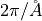

Band_calculation¶
In AMP2, band gap is estimated by computing the eigenvalues along the lines connecting every combination of high symmetry points. The high symmetry points for band gap estmation and band structures are selected in Comp. Mat. Sci. 49, 299 (2010). The calculaton procedure is shown as followed;
1. Make input sets for self consistent calculation to obtain charge density file (CHGCAR). By default, relaxed structure is used.
Do self consistent calculation.
3. Make input sets for non-self consistent calculation to estimate band gap and band structure. The k-points (KPOINTS) are selected as the lines connecting all combinations of high-symmetry points or the lines for drawing band structure.
Do non-self conssistent calculation.
Calculate the band gap and draw band structure.
The band gap estimation are;
1. Determine the Fermi level by filling the energy states from the lowest with valence electrons the number of k-points.
2. If Fermi level is placed between the maximum value and the minimum value of :math:`n`th band, it considered as metal. If not, conduction band (CB) and valece band (VB) can be determined.
3. The band gap is defined as a difference between the lowest energy in CB and the highest energy in VB. If gap is smaller than 0.01, AMP2 considers it as metal.
potential_type:
potential_type tag determines the functional scheme (LDA, GGA or HSE) for band calculation. Multiple functionals can be chosen.
Usage:
band_calculation: potential_type: - GGA | LDA | HSE - GGA | LDA | HSE
Default:
band_calculation: potential_type: - GGA
type_of_kpt:
type_of_kpt tag determines how to select k-points for band gap estimation. If all tag is used, k-points are selected as every point along the lines connecting every combination of high-symmetry k-points. Whereas, using band tag, k-points are chosen as the points used to draw band structure. band tag can reduce computational cost but can gives less accurate band gap.
Usage:
band_calculation: type_of_kpt: all | band
Default:
band_calculation: type_of_kpt: all
kspacing_for_band:
kspacing_for_band tag controls the interval between the k-points for band gap estimation. The unit is ‘’.
Usage:
band_calculation: kspcing_for_band: [real]
Default:
band_calculation: kspcing_for_band: 0.01
relax_check:
Relax_check tag determines whether the band calculation is not conducted without optimized structure or the band calculation is performed without optimized structure (using initial configuration). If relax_check is True and no optimization has been performed, AMP2 gives an error message.
Usage:
band_calculation: relax_check: True | False
Default:
band_calculation: relax_check: True
y_min (y_max):
y_min and y_max tags control the energy range of figure for band structure. The maximum energy range is set to be y_max + band gap.
Usage:
band_calculation: y_min: [real] y_max: [real]
Default:
band_calculation: y_min: 3 y_max: 2
incar:
User can additionally modulate the INCAR for VASP calculation using this tag. (AMP2 uses 1e-08 as EDIFF for band calculation since high accuracy is required to correct small gap band structure. See small gap correction)
Usage:
band_calculation: incar: [INCAR tag in VASP] : [INCAR command in VASP]
Default:
band_calculation: incar: EDIFF: 1e-08